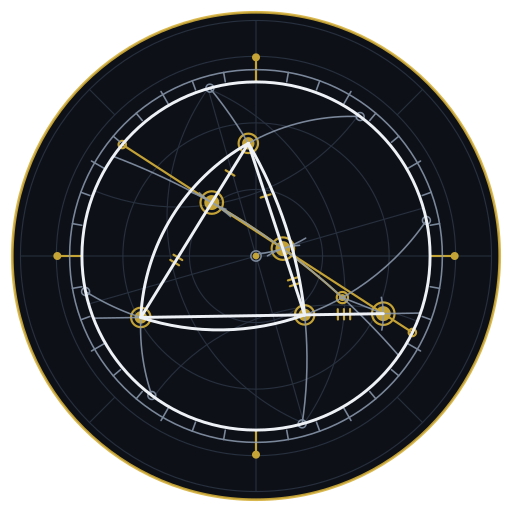

Menelaus of Alexandria¶

Menelaus of Alexandria (c. 70–140 CE) founded intrinsic spherical geometry by treating the spherical triangle—bounded by arcs of great circles—as a primary object in its own right. His three-book Sphaerica proved that the angle sum of a spherical triangle always exceeds two right angles, established the Rule of Six Quantities (Menelaus’s Theorem) that powered astronomy from Ptolemy’s Almagest onward, and anticipated the projective invariance of the cross-ratio by sixteen centuries.
Books in This Collection¶
Three-Witness Critical Edition · 1758 / 1898 / 1902 · Books I–III · 31 Atomic Sections
Sphaerica (Spherical Geometry) — Reconstructed across four synchronized tracks (English · Latin · Summary · Notes) and 1,044 linked primary-source folios from Edmond Halley’s 1758 Oxford Latin edition, Axel Björnbo’s 1902 study of Abū Naṣr Manṣūr’s Arabic witness, and J. L. Heiberg’s 1898 Greek text of Ptolemy’s Almagest I.13.
Key Features¶
1,044 Three-Witness Folio Scans
Every definition, lemma, and proposition links monotonically to 300-DPI archival scans of Halley (1758), Björnbo (1902), and Heiberg’s Syntaxis (1898).
Ten Calibrated Spherical & Projective Plates
Interactive theme-adaptive .euclid-graphic SVGs illustrate spherical excess, the Rule of Six Quantities, spherical cross-ratio pencils, Desargues’s axis, Ceva polarity, and Pascal’s hexagram.
Exact Symbolic Spherical Verification
Verify spherical transversals, polar triangles, cross-ratio invariance, and Rational Trigonometry analogues with zero floating-point drift in Demos and geometor.menelaus.
Reference & Project¶
Scholarly Apparatus
People — Profiles of Menelaus, Ptolemy, Abū Naṣr Manṣūr, Edmond Halley, Axel Björnbo, and J. L. Heiberg
Bibliography — Manuscript traditions, 1758 Oxford Latin edition, and modern critical studies
Concordance — Halley (1758) ↔ Björnbo / Abū Naṣr proposition numbering cross-walk
About This Project
About & Using This Edition — Editorial scope, four-track reading guide, and folio provenance
Demos & Python Modules — Symbolic spherical geometry verifiers and package reference
Project Log — Scriptorium transcription notes and verification milestones